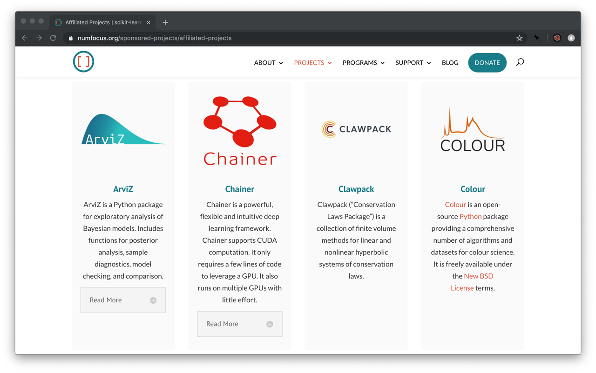

NumFOCUS, Colour 0.3.14 and Colour - Datasets 0.1.0!
We are delighted to announce that Colour has joined the NumFOCUS affiliated projects and that Colour 0.3.14 has been released over the weekend along with Colour - Datasets 0.1.0, a new Python package dedicated to colour science datasets management.
NumFOCUS
Colour is now an affiliated project of NumFOCUS, a 501(c)(3) nonprofit in the United States. This will strengthen the project and helps it grow and reach maturity.
Colour 0.3.14
Colour 0.3.14 has been released over the weekend, please visit the releases page for complete details or follow the highlights here.
We would like to thanks all the contributors whether they are contributing code or participating to discussions on Gitter, in the issues, on Slack or via email.
With this release we are getting close to have a beta candidate in the coming months.
Hacktoberfest - 2019
We had a few new contributors for the 2019 edition of the Digital Ocean Hacktoberfest.
Thanks to:
for their contributions! This was a good opportunity for us to revise and update both the Contributing and Installation guides.
Automatic Colour Conversion Graph
Colour now implements an automatic colour conversion graph based on NetworkX and enabling easier colour conversions:
>>> sd = colour.COLOURCHECKERS_SDS['ColorChecker N Ohta']['dark skin'] >>> convert(sd, 'Spectral Distribution', 'sRGB', verbose={'mode': 'Short'})
=============================================================================== * * * [ Conversion Path ] * * * * "sd_to_XYZ" --> "XYZ_to_sRGB" * * * =============================================================================== array([ 0.45675795, 0.30986982, 0.24861924])

Image Input and Output
Imageio is now a requirement for reading and writing images, it will be used if OpenImageIO is not available. If you wish to read OpenEXR files or develop Colour, you will need to install the FreeImage plugin as follows:
$ python -c "import imageio;imageio.plugins.freeimage.download()"
Support for OpenImageIO 2.x has also been implemented.
Name and Signature Changes
Various colour component transfer functions objects have been either renamed or their signature changed, most notably the sRGB transfer functions and the colour.oetf definition.
All the reverse words have been replaced with inverse in object names, file names and, docstrings.
Coverage
Coverage was raised to 100%. It does not mean that all the possible code paths are covered but it certainly strengthen the API.
Dependency Management
We have adopted Poetry to manage the development dependencies, the setup.py file has been replaced with a standardized pyproject.toml file.
Continuous Integration
Travis-ci and Azure Pipelines have been replaced with Github Actions.
Documentation
The README and the Manual have been slightly reorganised to create a better separation between the tutorials, API reference and, the new How-To Guide.
Colour - Datasets
Colour - Datasets 0.1.0 is a new Python package dedicated to colour science datasets management.
The existing datasets are hosted in Zenodo under the Colour Science - Datasets community:
>>> import colour_datasets >>> print(colour_datasets.datasets())
colour-science-datasets ======================= Datasets : 16 Synced : 1 URL : https://zenodo.org/communities/colour-science-datasets/ Datasets -------- [ ] 3269926 : Agfa IT8.7/2 Set [ ] 3245883 : Camera Spectral Sensitivity Database [ ] 3367463 : Constant Hue Loci Data [ ] 3362536 : Constant Perceived-Hue Data [ ] 3270903 : Corresponding-Colour Datasets [ ] 3269920 : Forest Colors [x] 3245875 : Labsphere SRS-99-020 [ ] 3269924 : Lumber Spectra [ ] 3269918 : Munsell Colors Glossy (All) (Spectrofotometer Measured) [ ] 3269916 : Munsell Colors Glossy (Spectrofotometer Measured) [ ] 3269914 : Munsell Colors Matt (AOTF Measured) [ ] 3269912 : Munsell Colors Matt (Spectrofotometer Measured) [ ] 3245895 : New Color Specifications for ColorChecker SG and Classic Charts [ ] 3252742 : Observer Function Database [ ] 3269922 : Paper Spectra [ ] 3372171 : RAW to ACES Utility Data
Colour - Datasets was created to overcome issues encountered frequently when trying to access or use colour science datasets:
No straightforward ingestion path for dataset content.
No simple loading mechanism for dataset content.
Unavailability of the dataset, e.g. download url is down, dataset content is passed directly from hand to hand.
No information regarding the definitive origination of the dataset.
Colour - Datasets offers all the above: it allows users to ingest and load colour science datasets with a single function call. The datasets information is hosted on Zenodo where the record for a dataset typically contain:
An urls.txt file describing the urls to source the dataset files from.
A copy of those files in the eventuality where the source files are not available or the content has changed without notice. This actually happened to the Camera Spectral Sensitivity Database dataset during the project incubation.
Information about the authors, content and licensing.
Other Projects
Colour - Demosaicing and Colour - HDRI have been updated according to Colour 0.3.14 changes.
Colour - Checker Detection will follow in the coming days.
Comments
Comments powered by Disqus